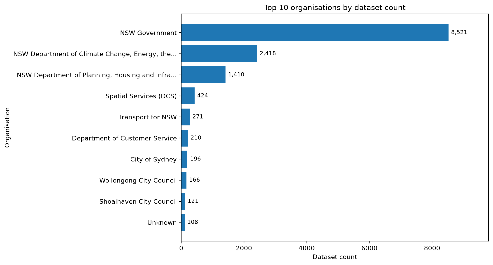
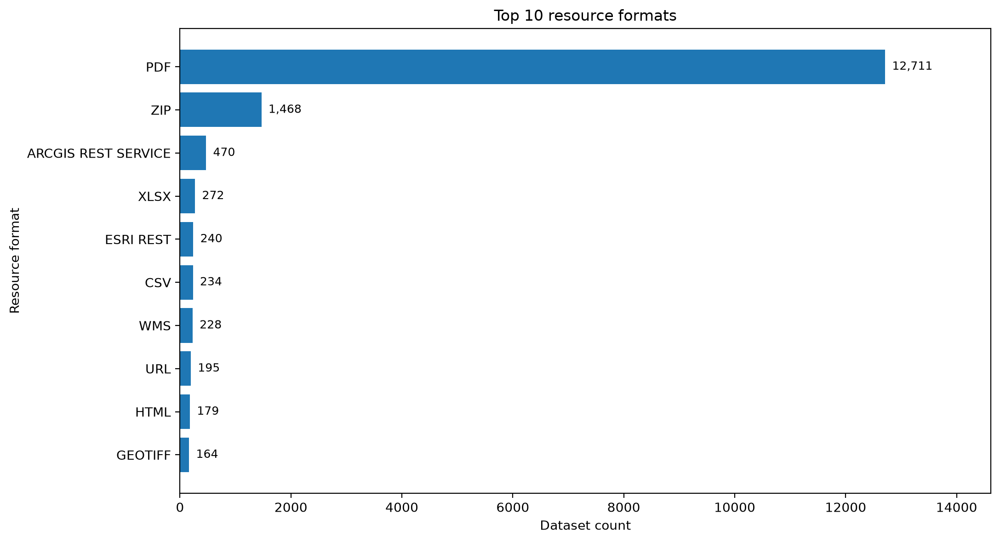
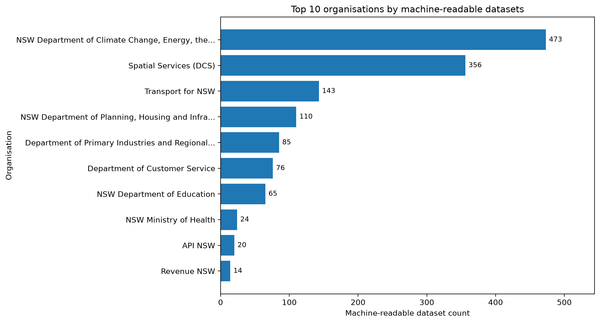
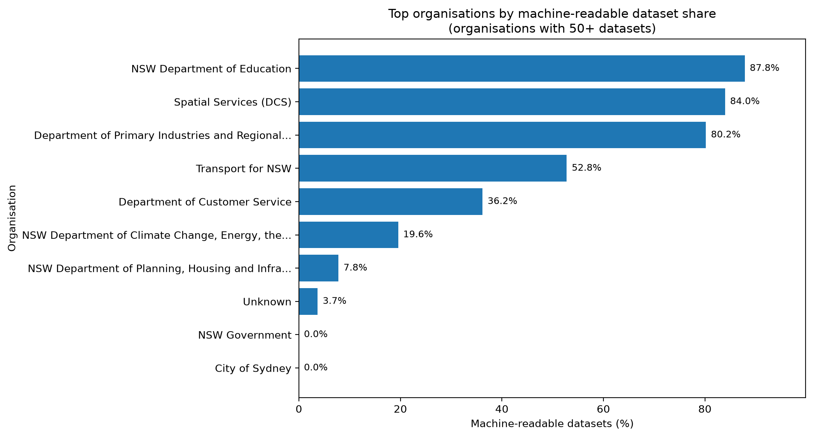
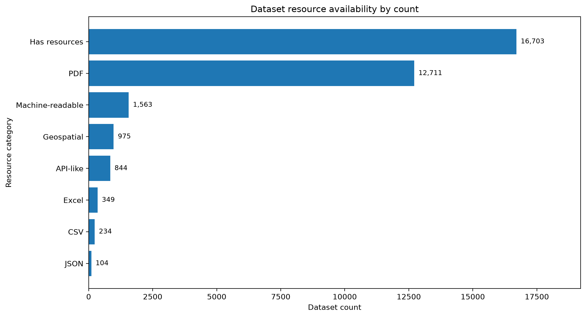
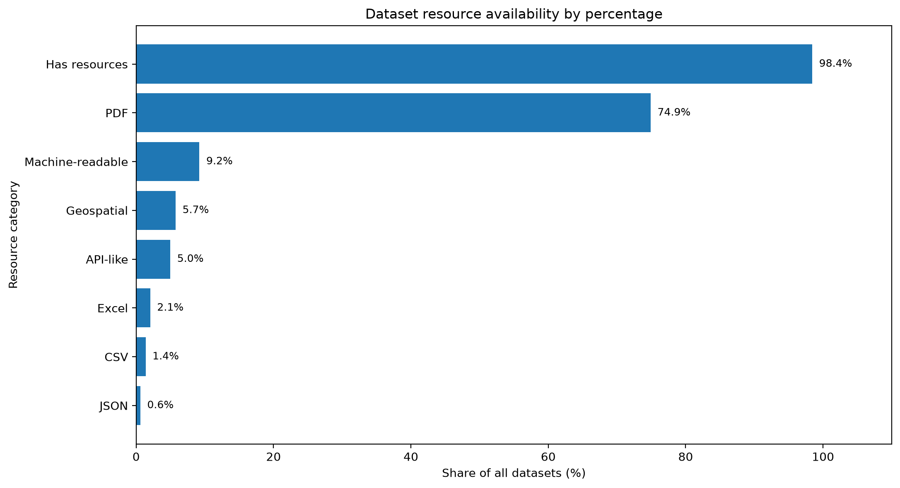
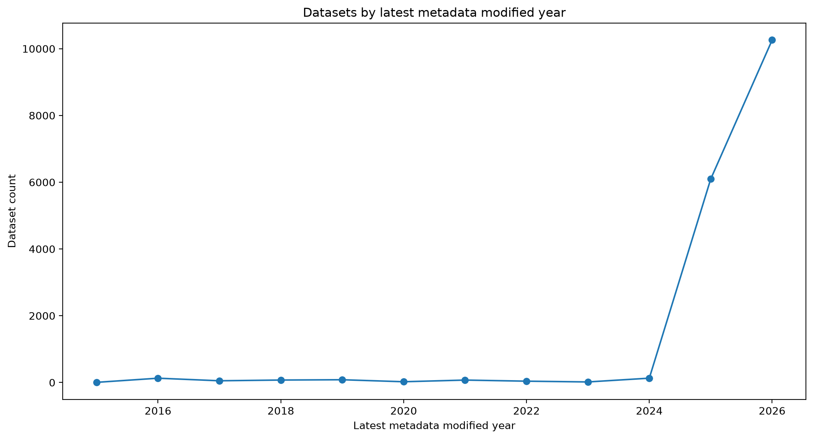

Project Overview
This project analyses publicly available metadata from the Data.NSW open data catalogue to explore how NSW Government datasets are published, maintained and made available for reuse.
The project follows an end-to-end data workflow, including API data collection, nested metadata flattening, cleaning, feature creation, summary analysis and visualisation. The analysis focuses on catalogue-level patterns such as publisher activity, resource formats, metadata update activity and machine-readable dataset availability.
Data Source
This project uses publicly available catalogue metadata from the Data.NSW open data portal, accessed through the CKAN package search API.
API endpoint: Data.NSW CKAN package search API
Objective
The main question explored in this project was:
How accessible and analysis-ready are datasets published through the NSW Open Data catalogue?
Supporting questions included:
- How many datasets are available in the catalogue?
- Which organisations publish the most datasets?
- Which resource formats are most common across the catalogue?
- What share of datasets include listed resources?
- What share of datasets include machine-readable resources?
- Which organisations publish the most machine-readable datasets?
- How recently have catalogue metadata records been modified?
Tools Used
Project Workflow
The project was structured as a reproducible metadata analysis workflow, moving from live API collection through to cleaned datasets, summary tables and visual charts.
- Collected catalogue metadata from the Data.NSW CKAN API using pagination.
- Flattened nested API responses into structured CSV datasets.
- Cleaned and standardised metadata fields for analysis.
- Created features for resource availability, update timing and machine-readable classification.
- Analysed dataset counts by organisation, resource format and metadata update year.
- Estimated machine-readable dataset availability using rule-based detection.
- Exported summary tables and charts for portfolio presentation.
Analysis Dataset
The analysis uses catalogue metadata collected from the Data.NSW API. Each dataset record was flattened into a structured format with fields such as dataset title, organisation, metadata dates, resource count, resource formats, resource URLs and tags.
The final collected dataset contains:
- 16,970 datasets
- 217 unique organisations
- 16,703 datasets with listed resources
- 1,563 datasets with machine-readable resources
- 16,235 datasets modified within 12 months
- 1.65 average resources per dataset
- 1.0 median resources per dataset
Machine-Readable Classification
For this project, a dataset is treated as having a machine-readable resource if it includes at least one eligible structured, tabular, API-like, Excel or geospatial resource format or URL.
General document-style formats such as PDF are not counted as machine-readable. Generic ZIP files are not counted unless their metadata clearly identifies a structured or geospatial format.
This classification is rule-based and should be interpreted as an estimate rather than an official measure of catalogue quality.
Key Findings
1. Most catalogue records have at least one listed resource
Of the 16,970 datasets collected, 16,703 had at least one listed resource. This suggests that most catalogue records provide some form of linked file, document, service or data access point.
2. PDF is the most common resource format
PDF appeared in 12,711 datasets, making it the most common listed resource format. This highlights that many catalogue records provide document-style resources rather than structured, analysis-ready data files.
3. Machine-readable dataset availability is much lower
Using rule-based classification, 1,563 datasets were identified as having at least one machine-readable resource, such as CSV, JSON, Excel, API-like services or geospatial formats.
4. Dataset publishing is concentrated across several large organisations
NSW Government, the NSW Department of Climate Change, Energy, the Environment and Water and the NSW Department of Planning, Housing and Infrastructure were among the largest publishers by dataset count.
5. Geospatial and API-style resources are important contributors
Spatial Services, Transport for NSW and environmental agencies had stronger representation among machine-readable and geospatial resources, particularly through ArcGIS REST, ESRI REST, WMS and related spatial service formats.
Visualisations
The charts below summarise the main analysis outputs, including dataset publishing by organisation, common resource formats, resource availability, machine-readable dataset coverage and metadata update activity.

Top organisations by dataset count
This chart ranks the organisations with the highest number of published datasets in the Data.NSW catalogue.

Top resource formats
This chart shows the most common resource formats across the catalogue. PDF is the dominant format, followed by ZIP and geospatial or API-style resources.

Top machine-readable dataset publishers
This chart ranks organisations by the number of datasets that include at least one machine-readable resource.

Machine-readable dataset share
This chart compares organisations by the percentage of their datasets that include machine-readable resources, limited to organisations with at least 50 datasets.

Resource availability by count
This chart compares the number of datasets with listed resources, machine-readable resources, PDF resources, API-like resources and other key resource categories.

Resource availability by percentage
This chart shows resource availability as a share of all datasets, highlighting the difference between general resource availability and machine-readable resource availability.

Datasets by latest metadata modified year
This chart shows catalogue records grouped by their latest metadata modified year. It reflects catalogue metadata update timing, not necessarily when the underlying dataset was created or last updated.
Project Outputs
The project produced cleaned datasets, summary tables and charts covering organisation-level publishing patterns, resource format availability, machine-readable dataset coverage and catalogue metadata update activity.
For the full technical workflow, source code, methodology and output files, view the GitHub repository below.
View GitHub RepositoryLimitations
This analysis should be interpreted as an exploratory review of catalogue metadata, not a full validation of every dataset or resource.
- The analysis is based on catalogue metadata, not the full contents of each dataset.
- Resource format labels depend on how publishers entered metadata.
- The project does not validate whether each resource URL is currently working.
- Machine-readable classification is based on simple rule-based detection.
- Metadata modified dates do not necessarily mean the underlying data was updated.
- Some organisations may be grouped under broad or generic publisher names.
- The analysis does not assess the accuracy, completeness or usability of the underlying datasets.